٣ مصادر للمراجع البصرية تغذّي عينك قبل أي برومبت
باختصار: هذي المصادر الثلاثة اللي شاركتها في الفيديو، وبنفس الترتيب: Savee للصور والمودبورد، و The Index لمشاريع أفضل استوديوهات التصميم في العالم، و Coverjunkie لأغلفة المجلات. مع كل مصدر: إيش تلقى فيه، وكيف تستخدمه في شغلك بالذكاء الاصطناعي.
الأداة تنفّذ اللي تطلبه منها، بس عينك هي اللي تحدد إيش تطلب. وكل ما شفت شغل أقوى، صار ذوقك أدق وطلبك أوضح، وطلعت نتيجتك مختلفة عن اللي يطلبه الكل.
Savee
مكتبة مراجع بصرية يختارها مصممين، تحفظ منها بضغطة وترتّبها في بوردات، بدون إعلانات ولا زحمة.
إيش تلقى فيه
- مراجع مختارة بذوق: تصوير وتصميم وخطوط وأزياء، يختارها مصممين مو خوارزمية إعلانات.
- بحث بالكلمة والتاق، وفي اشتراك Pro تبحث باللون أو بصورة مشابهة.
- تحفظ من أي مكان: إضافة للمتصفح، وتطبيق للجوال، وإضافة لـFigma.
- التسجيل مجاني، و Pro بحوالي 34 ريال بالشهر ($9) بالدفع السنوي.
كيف تستخدمه
- ١سوّ حساب مجاني ونزّل إضافة Chrome.
- ٢افتح بورد لكل مشروع، وسمّه باسم الجو اللي تبيه، مثلاً «إضاءة دافية» أو «أزياء في الصحراء».
- ٣احفظ من ١٠ إلى ١٥ مرجع، واحذف أي صورة ما تخدم الفكرة.
- ٤قبل البرومبت، اكتب إيش اللي شدّك في كل مرجع: الإضاءة؟ الألوان؟ الكادر؟ هذي الكلمات هي برومبتك. ولو احتجتها بالإنجليزي، ارجع لـقاموس الكلمات المفتاحية #00007.
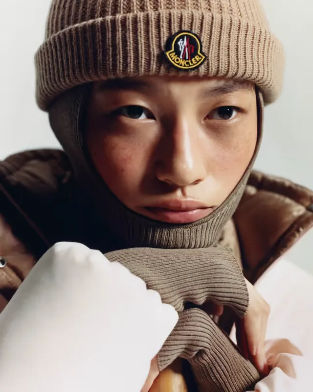
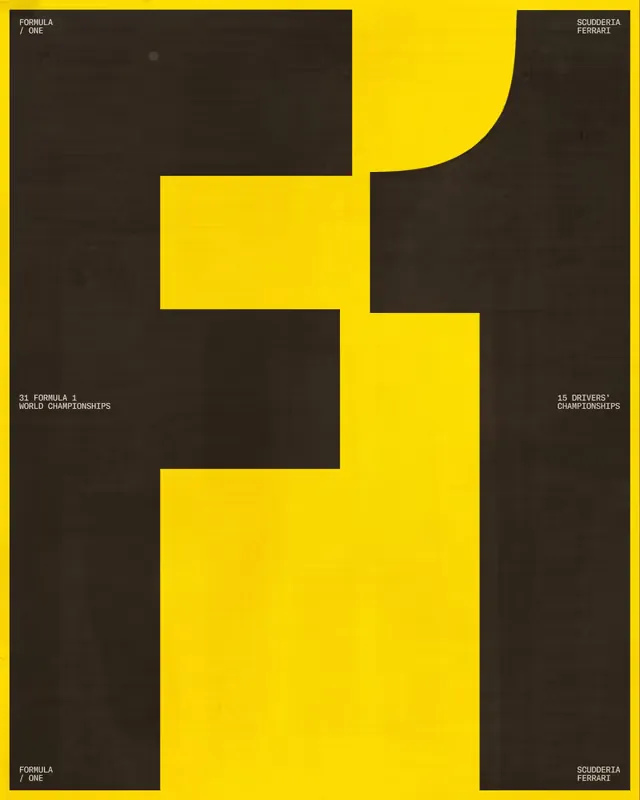
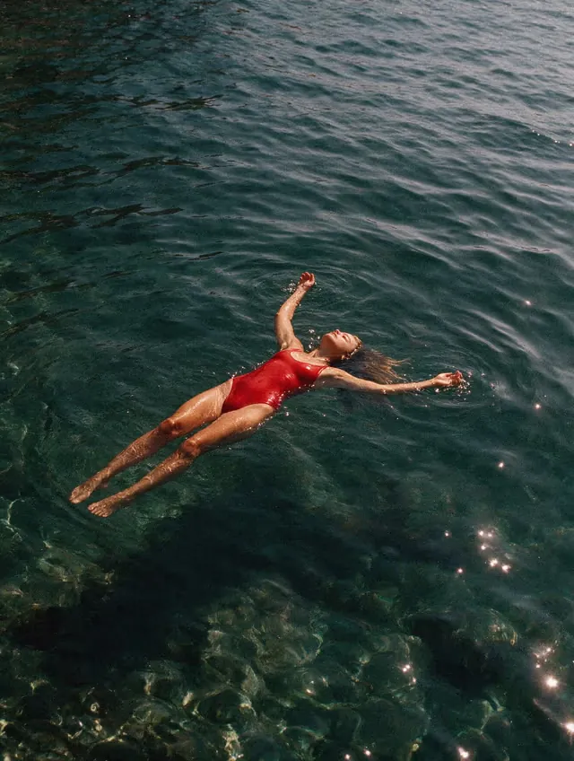
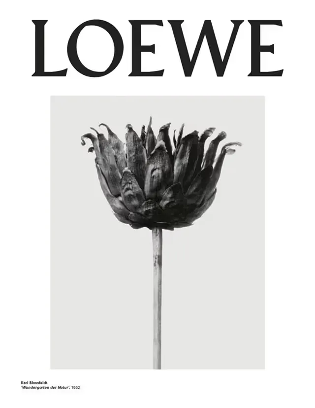
مراجع من الصفحة الرئيسية لـSavee.
لو تستخدم Claude: فيه Savee MCP يربط Claude بمكتبتك وبأكثر من 6 ملايين مرجع، عشان اللي يقترحه يبدأ من ذوقك. متوفر في اشتراك Pro و Team.
افتح Savee ←The Index
معرض مختار لأفضل استوديوهات التصميم والمصممين ومصممي الخطوط في العالم، ومجاني بالكامل.
إيش تلقى فيه
- 247 مشروع من 82 استوديو، مقسّمة حسب المجال: الهوية، والتوجيه الإبداعي، والتوجيه الفني، والتصوير، والتغليف، وتصميم الخطوط.
- الجودة قبل الكمية: يضيفون كم مشروع بالأسبوع بس.
- جدول للاستوديوهات في الصفحة الرئيسية: مدينة كل استوديو وسنة تأسيسه وحجم فريقه.
- نشرة أسبوعية بآخر الإضافات.
كيف تستخدمه
- ١افتح صفحة Projects واختر التصنيف القريب من شغلك، مثلاً Art Direction أو Creative Direction.
- ٢اضغط SHUFFLE لما تبي تشوف شي ما كنت بتدوّر عليه.
- ٣اضغط على أي مشروع، ثم على اسم الاستوديو، وتشوف كل مشاريعه في مكان واحد.
- ٤اسأل نفسك: إيش الفكرة اللي ربطت الصور والخطوط والتغليف مع بعض؟ هذا السؤال هو قلب التوجيه الإبداعي.
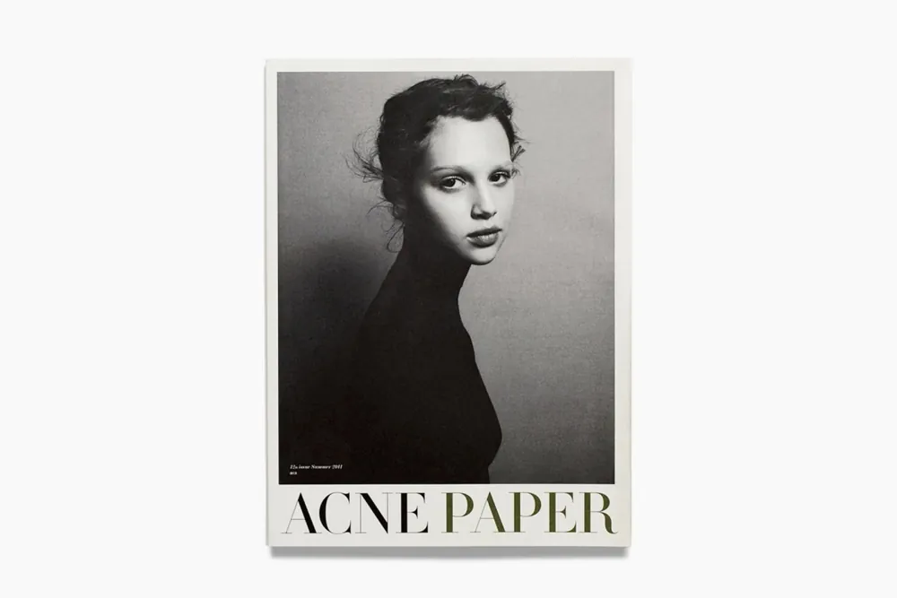
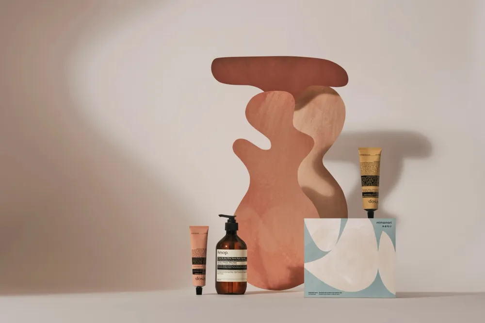
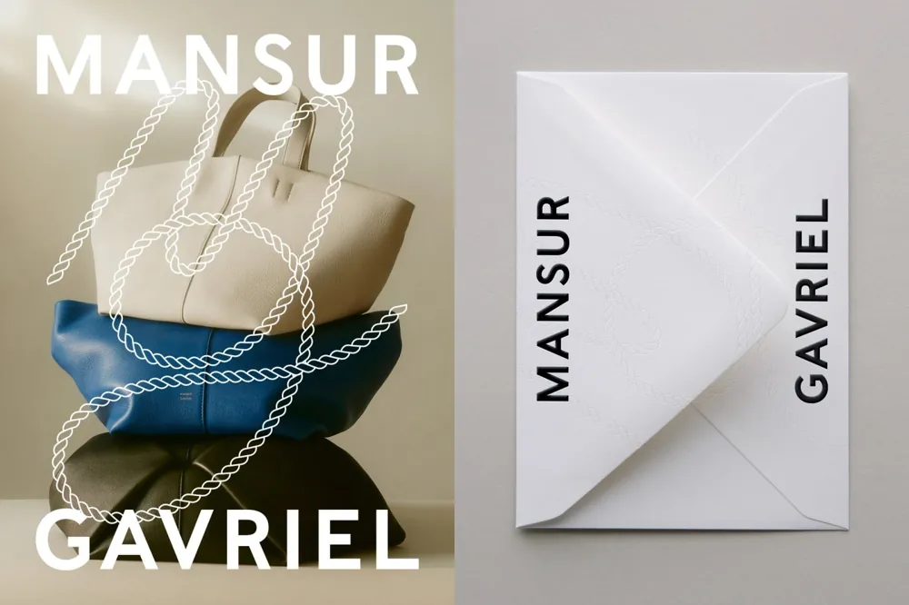
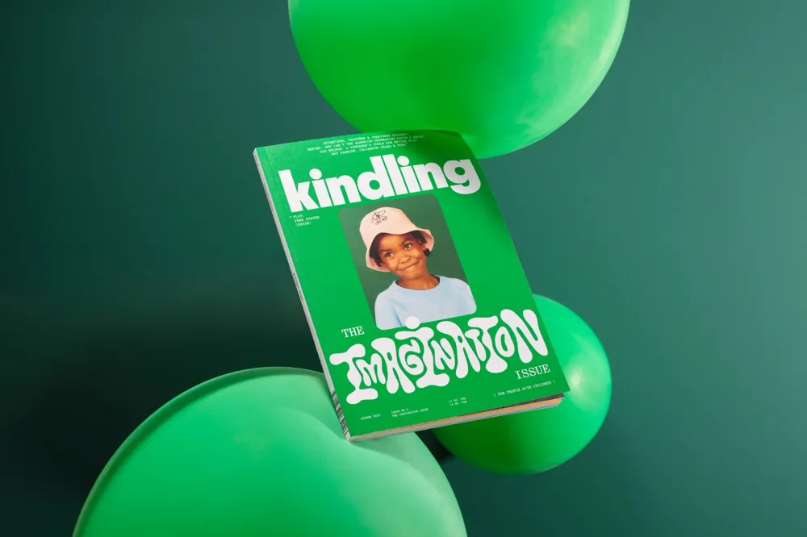
الفرق بين صورة حلوة وحملة: إن كل قطعة تخدم نفس الفكرة. هنا تشوف هالشي بعينك في شغل استوديوهات يشتغلون مع براندات عالمية.
افتح The Index ←Coverjunkie
أرشيف لأغلفة المجلات من 2010، ويقدّم نفسه كأكبر أرشيف أغلفة في العالم.
إيش تلقى فيه
- أحدث الأغلفة أول بأول من مجلات مثل Vogue و The New Yorker و Wired و TIME.
- تصنيفات جاهزة: أغلفة طباعية، وأغلفة متحركة، وأغلفة فازت بجوائز، وأفضل أغلفة كل عقد.
- مختارات كل سنة من 2007 إلى اليوم.
- بحث بالكلمة أو باسم المجلة.
كيف تستخدمه
- ١ابدأ من قائمة cover categories، وجرّب typographic covers لو شغلك فيه نص فوق صورة.
- ٢ابحث باسم مجلة قريبة من جمهورك.
- ٣اختر غلاف واحد واكتب فكرته في سطر.
- ٤سوّ نفس الشي مع مشروعك: إذا ما قدرت تختصر فكرتك في سطر، بتطلع الصورة مشتتة.
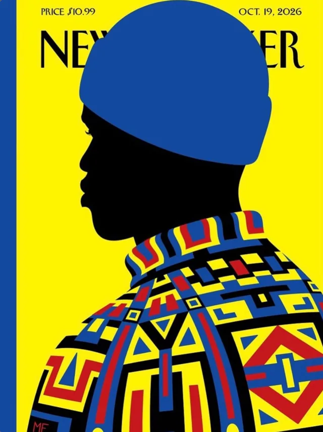
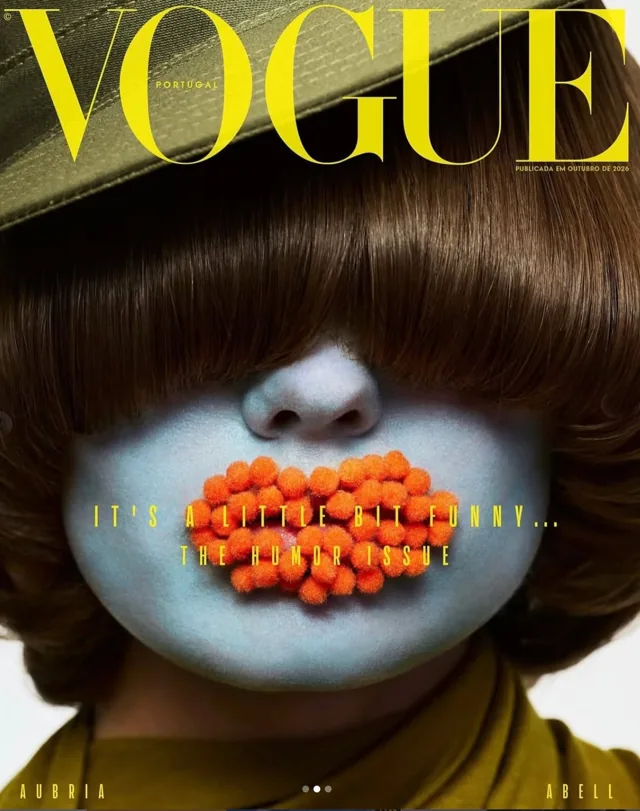
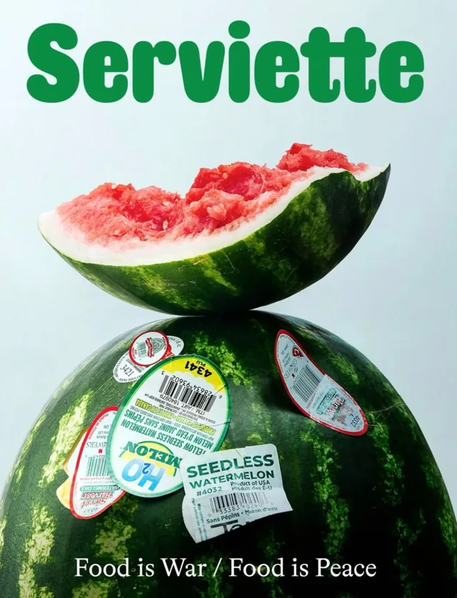
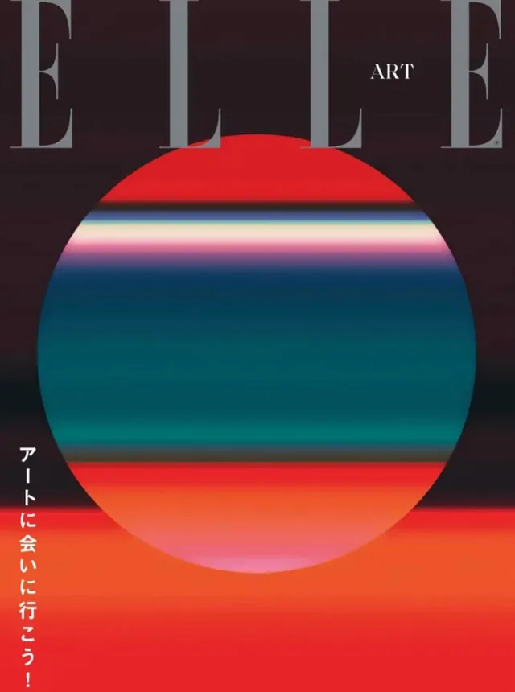
أغلفة حديثة عبر Coverjunkie: The New Yorker، و Vogue، و Serviette، و ELLE.
ليش الأغلفة بالذات؟ لأن الغلاف أقوى تمرين على التوجيه الإبداعي: فكرة وحدة، في صورة وحدة، ولازم توصل في ثانية.
افتح Coverjunkie ←متى ترجع لكل مصدر؟
| المصدر | ارجع له لما |
|---|---|
| Savee | تبني مودبورد لجو أو إضاءة أو ستايل صورة. |
| The Index | تبي تشوف مشروع كامل: هوية وتغليف وحملة تخدم فكرة وحدة. |
| Coverjunkie | تبي فكرة قوية تنقال في صورة وحدة. |

هذي ٣ مصادر بس، من بنك كامل
داخل مجتمع صُنّاع الإلهام على Skool بنك كامل من الموارد والملفات ومصادر الإلهام، وهذي الثلاثة جزء صغير منه.
والمجتمع جزء من معادلة صناعة الإلهام 2.0: الورشة اللي تتعلّم فيها سير عمل إبداعي من ٧ مراحل، يحوّل المراجع اللي جمعتها إلى صور وفيديوهات بنتائج قوية، مهما تغيّرت الأدوات.
- بنك موارد ومصادر إلهام
- مكتبة بريفات للتطبيق
- دورة وماستركلاسات
- سنة كاملة في المجتمع
الصور مأخوذة من المواقع الثلاثة بتاريخ 26 أكتوبر 2026، وحقوقها لأصحابها، ومعروضة هنا للتعريف بكل مصدر. الأرقام والأسعار كما تظهر في كل موقع بنفس التاريخ، وحُوّل سعر Savee للريال بسعر 3.75 ريال للدولار. الروابط مباشرة وما فيها أي عمولة.
من ماجد عنقاوي · malearnsa.com · @majidangawi